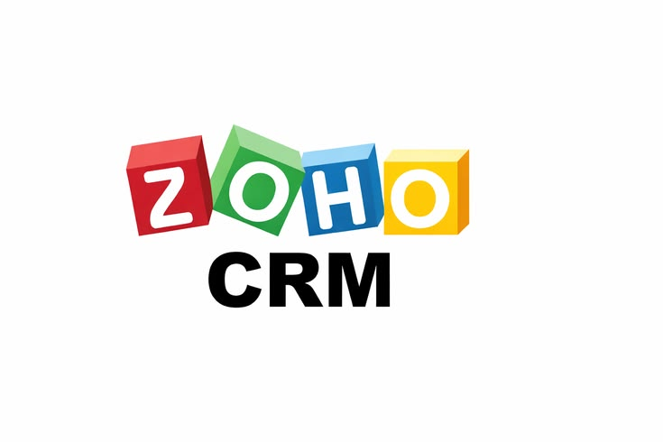

Why CRM systems are more than just sales tools
Traditionally, the importance of CRM has been as a sales and marketing tool. However, some of the biggest gains for your business can come from other areas, such as operations, customer service, supplier management, and partner relationships. Listed next are some key business functions and how each one can benefit from a CRM system.
1. Marketing
The marketing team will be able to segment prospects and customers and have visibility of every lead and deal—mapping out the journey from lead to sale. This will provide a clear understanding of the effectiveness of all marketing activities and help to measure the return on investment (ROI) by tracking leads and deals generated from each event or campaign.
2. Sales
Sales managers will understand their pipeline much better and be able to forecast sales more accurately. The sales team will benefit from reduced admin, a better understanding of their clients, and the opportunity to spend more time selling and less time inputting data.
3. Customer service
A customer might raise an issue via one channel such as Twitter or Facebook, but customer service may switch to email, phone, or live chat to resolve the matter. By pulling together the communication from multiple channels into a single platform, we provide the customer service team with all the information they need to resolve the query. We can ensure that whoever is speaking to the customer has access to the current status, next action, and notes, which will make the customer feel valued and well looked after.
4. Customer success/account management
Having visibility of support requests, deals, and all communications history will enable the account manager to review all the information they need prior to making a call or visit to an existing customer. They will be prompted when the next call to each client is due and provided with structure to make sure they ask the right questions to measure customer happiness and retention and to identify opportunities to upsell or cross-sell related products and services.
5.Operations
Once a deal has been won, we can automatically share these details with the operations/delivery team so that they can fulfill the order or job.
6. Finance
We can use the system to notify the finance team when a deal has been won, an order fulfilled, or a job completed so that they can raise the necessary invoices.
We should also consider integrating the CRM with our accounting/invoicing software so that these processes may be streamlined and automated further.
Supplier management and partner relationships
Using the CRM for tracking meetings, calls, and emails with suppliers and partners will help teams manage these relationships better.
Follow-ups can easily be created, and reporting enables a comparison of the efficiency of suppliers and also the success and activity of partners.
This inclusion of other business areas will help you deliver more value with the CRM, improve internal communication, and increase buy-in from the respective stakeholders.
So, having considered the areas we wish to improve with a new CRM, it is now time to be specific and to set some goals.
Get a CRM today

Zoho
Six signs your business needs a CRM
Your operations are becoming harder to track, customer communication is fragmented and reporting takes too much time.
A CRM helps businesses centralize data,
improve follow-ups,
automate processes
and improve customer relationships.
It also provides management with
better visibility into pipeline performance,
operations and reporting.

Software
Why custom software gives businesses an advantage
Off-the-shelf systems rarely match the exact way your business operates.
Custom software helps businesses automate
unique processes,
improve productivity
and create workflows
tailored to their operations.
Instead of changing your business
to fit software,
the software adapts to your business.

Zoho
The five Zoho CRM editions
Zoho crm offers five different editions with each packing a host of features suitable for different taste and needs
1. Free edition: This edition offers the core modules such as leads, accounts, contacts, feeds, documents and mobile apps for up to
ten users, completely free of charge, this is a great way to start using zoho crm and upgrade to one of the paid.
editions as your business needs grow.
2. Standard edition: In addition to the features available in the free edition you will have access to sales forecasting,
reports and dashboards
document library roles and profiles mass email, call center connectors and the ability to store up to
100,000 records of information.
3. Professional edition: Similarly, the professional edition offers all the features available in free and standard editions plus email integrations, social features
google adwords integration, workflow automation, inventory management, macros and the ability to store unlimited records.
4. Enterprise edition : This edition offers territory management, custom aplications, custom buttons workflow approval processes, page layouts, custom modules,
and multiple curencies on top of the features available to the professinal edition
5. Ultimate edition :Last but not least the ultimate edition adds more features to make it the choice for larger organizations by throwing in sandbox, dedicated database cluster
priority support advanced customization advanced CRM analytics and enhanced storage
Contact us to Start your project
6. CRM plus: A recent addition to the CRM family CRM PLus provides a more holistic approach to the traditional CRM system by combining the Enterprise edition with Zoho Campaigns , Desk, SalesIQ, Social, Projects
surveys and Reports. This package allows users to centralize all their marketing, sales and client servicing processes in one place without need to jump between different plartforms
while saving considerably in direct costs.

Zoho
Defining key objectives and measures of success of a CRM for your organization
Once you have a detailed understanding of the business-wide drivers for change, it is best to set some objectives. This is often best achieved by defining specific ways in which you will measure the success of your new CRM system.
1. To increase the conversion rate of lead to deal by 50% within 3 months
2. To have the ability to measure our ROI on marketing
3. To know how many times per year we have communicated with existing clients
4. To have visibility of how many/which products each of our clients has
5. All quotes, orders, and jobs paperwork will be replaced with electronic documentation
6. Our operations team will be reminded when every service is due in advance so this can be scheduled and completed on time
7. To increase first-year retention of members from 40% (current level) to 60% within 2 years
8.To have the ability to measure where leads have come from
9. To have the ability to measure conversion rates (from inquiry to customer)
10 .To provide the sales management team with complete visibility of the pipeline
11 .To provide senior management with a weighted forecast of the pipeline
12. To have the ability to break down sales performance by territory/area and target areas for improvement
13. To replace several spreadsheets and Outlook contact directories that are currently used in the business with a single central database accessible by all the team
Contact us to Start your project